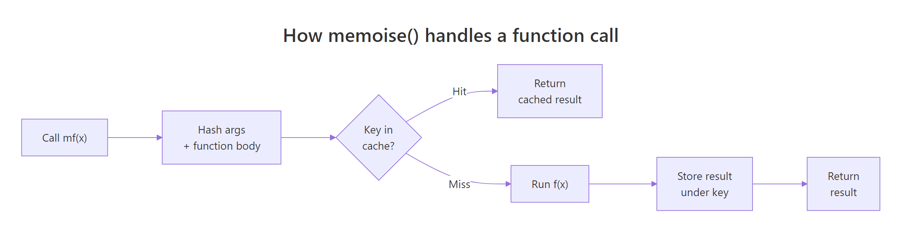
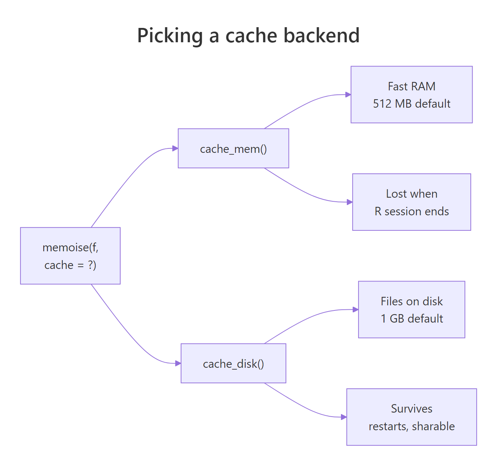
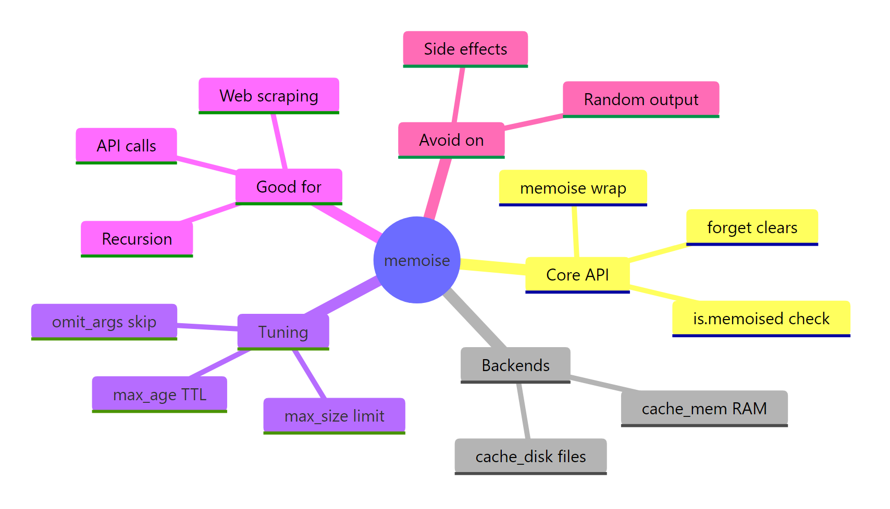

Memoize R Functions: Cache Results and Call Expensive Code Only Once
Memoization makes a slow R function fast the second time you call it with the same arguments. The memoise package wraps any function in a one-liner so repeat calls return cached results in microseconds instead of recomputing.
Why is my R function slow on the second call?
Some R functions are slow for a reason. They hit an API, scrape a page, fit a model, or recurse on themselves. If you call them twice with the same input, the second call repeats all that work for no benefit. Memoization fixes that in one line. Watch what happens when we wrap a deliberately slow Fibonacci function and time two calls.
The first call walks the full recursion tree and sleeps on every node, taking about twenty seconds. The second call with the same argument finds the result in the cache and returns it in a millisecond. You did not change one line of slow_fib(). The wrapper handles the storage, lookup, and retrieval for you.
Try it: Memoise a function slow_square(x) that sleeps a tenth of a second and returns x^2. Time two calls of ex_slow_square_m(5) and confirm the second is much faster.
Click to reveal solution
Explanation: memoise() wraps the slow function. The first call runs and caches the result; the second call returns the cached value without sleeping.
How does memoise() cache function results?
Under the hood, memoise() takes your function, hashes the arguments plus the function body into a key, and looks that key up in a cache. On a miss it runs the function and stores the output. On a hit it skips the computation entirely.

Figure 1: How memoise() turns a function call into a cache lookup.
A small demonstration makes this concrete. We wrap a function that returns a single draw from rnorm(). Memoising it is usually a bad idea (more on that in the next section), but it is perfect for seeing the cache behaviour because the uncached output would change every call.
Both calls returned the same number, because the second one never touched rnorm(). The cache key was built from the integer 1, so memoise recognised it had already seen that input.
Keys are built from values, not variable names. That means passing the same value through a different variable still hits the same cache entry.
is.memoised() tells you whether a function has been wrapped. The plain slow_draw is still the original, so it returns FALSE. Only the wrapped copy, draw_m, carries a cache.
identical() produce the same key, so 1L and 1 count as different calls because one is integer and the other is double. If your function accepts numeric-or-integer versions of the same value, coerce before passing in.Try it: Write a one-line check that returns TRUE when a function has been memoised and FALSE when it has not. Test it on both draw_m and slow_draw.
Click to reveal solution
Explanation: is.memoised() is the built-in predicate. Wrapping it in your own function adds nothing except a clearer name at the call site.
When should you memoize and when should you avoid it?
Memoization only works when the function's output depends entirely on its arguments. That is called referential transparency: the same inputs must always give the same output.
Good candidates for memoization:
- External API calls that return the same result for the same query
- Web scraping — hitting the same URL twice is wasted bandwidth
- Expensive model fits in Shiny, where users often revisit the same parameter combinations
- Recursive math like Fibonacci or dynamic programming
- Parameter sweeps that revisit earlier grid points
- SQL or BigQuery lookups that are slow and deterministic
Bad candidates:
- Functions with side effects like writing to a file or sending an email — you want those to run every time
- Functions that return the current time, date, or random numbers — caching freezes the output at the first call
- Functions that read mutable state like a database row that might change between calls
- Already-fast functions — the hashing overhead can outweigh the saving
Here is what goes wrong when you violate referential transparency. We memoise Sys.time(), which should return the current time.
The second call returned the same timestamp as the first. From the cache's point of view, both calls had zero arguments, so they shared a key. Memoization froze time.
f(x) can return a different value the second time, memoise will silently return a stale answer. Audit your function with one question: "given the same inputs, is the output always the same?"Try it: Predict what happens if you memoise sample(1:10, 1) and call it three times. Will you get three different integers or one integer repeated?
Click to reveal solution
Explanation: The wrapped function takes no arguments, so every call shares the same cache key. The first draw is stored; the next two calls return it unchanged. This is the exact trap the warning above describes.
How do you persist the cache across R sessions?
By default, memoise() stores results in a cache_mem() backend. That is a fast in-memory cache capped at 512 MB that disappears when your R session ends. For long-running work that you want to survive a restart, switch to cache_disk(), which writes each cache entry to a folder as an RDS file.

Figure 2: Picking between in-memory and on-disk caches.
Here is a disk-backed cache in action. We point it at a temporary folder so the example is self-contained, and wrap a deliberately expensive function.
The first call ran the half-second sleep and dropped one file into the cache folder. The second call skipped the computation and returned the cached result. If you restart R and point a new cache_disk() at the same folder, the entry is still there.
You can also set a time-to-live on the cache so stale entries clear automatically. That is useful for API responses you trust for a few minutes but not forever.
The first call cached a timestamp with a five-second shelf life. After sleeping six seconds, the key was considered stale, so the second call ran afresh and returned a new time. Without max_age, both calls would have returned the same timestamp, as you saw in the previous section.
cache_disk() object and pass it as the cache = argument to several memoise() calls. Keys include the function body, so collisions are impossible, and you get one place to clear everything.Try it: Change the max_age in the snippet above from 5 to 2 seconds. What value should Sys.sleep() be set to so the second call is still a cache hit?
Click to reveal solution
Explanation: A sleep of one second keeps us inside the two-second TTL window, so the second call returns the cached timestamp. Sleeping three seconds would expire the entry and force a fresh call.
How do you invalidate or inspect a memoised function?
Sometimes you need to clear the cache deliberately. Maybe a remote API changed its data, or you want to force a recompute after tweaking a downstream formula. The memoise package gives you three tools: forget() to clear everything, drop_cache() to drop one key, and has_cache() to ask whether a key is already stored.
Notice the double-parenthesis pattern: has_cache(life_m)(2) returns a function and then calls it with the key you are asking about. The same goes for drop_cache(). After the first three calls we have three keys; has_cache()(2) confirms key 2 is present; drop_cache()(2) removes only that one; forget() wipes the whole cache.
verbose = TRUE argument for logging only, pass omit_args = "verbose" to memoise() so calls with verbose = TRUE and verbose = FALSE share the same cache entry.Try it: Build a memoised ex_double_m() that returns x * 2, cache three values, then drop only the entry for x = 5. Confirm with has_cache() that keys 1 and 5 differ.
Click to reveal solution
Explanation: drop_cache(mf)(k) removes only key k. Everything else in the cache is untouched, so key 1 is still present while key 5 is gone.
Practice Exercises
Exercise 1: Memoize a slow mean function
Write a function my_slow_mean(n) that generates a random vector of length n with a fixed seed and sleeps for 0.3 seconds before returning its mean. Memoise it as my_mean_m, run a first call to warm the cache, then time a second call and save its elapsed time as my_result.
Click to reveal solution
Explanation: The first call pays the 0.3-second sleep and stores the mean under the key for n = 1000. The second call returns the stored value without sleeping, so my_result is effectively zero.
Exercise 2: Disk cache with a TTL
Build a fake API function my_api(id) that sleeps half a second and returns id * 100. Wrap it with memoise() using cache_disk() and a max_age of 2 seconds. Call my_api_m(1), sleep for three seconds, call it again, and confirm the second call was a cache miss (run time near half a second).
Click to reveal solution
Explanation: The first call pays the half-second sleep. Waiting three seconds exceeds the two-second TTL, so the cache entry expires. The second call runs from scratch and matches the first call's timing — proof the cache miss is real.
Complete Example
Let us put everything together with a small weather-lookup workflow. Imagine fetch_weather(city) hits a slow API (we fake it with Sys.sleep()). You call it for three cities, then repeat the same query to warm the cache.
The first pass pays three API calls (three sleeps of 0.4 seconds each). The second pass reads all three results from disk in milliseconds. If you restart R and point a fresh cache_disk() at the same folder, the second pass is still free. That is the whole point of memoization in one example: cheap the second time, cheap after a restart, and you did not rewrite fetch_weather() at all.
Summary

Figure 3: Memoization in R at a glance.
| Concept | Takeaway | Function |
|---|---|---|
| Wrap a function | One-line speedup for repeat calls | memoise(f) |
| Default cache | 512 MB RAM, gone at session end | cache_mem() |
| Persistent cache | Files on disk, survives restarts | cache_disk(dir = ...) |
| Expire entries | TTL for fresh-but-not-realtime data | max_age = N |
| Clear everything | Nuke the cache | forget(mf) |
| Clear one key | Drop a single entry | drop_cache(mf)(key) |
| Check a key | Ask if a key is cached | has_cache(mf)(key) |
| Ignore an argument | Skip logging flags in the key | omit_args = "verbose" |
| Safety rule | Only memoise pure functions | — |
References
- memoise package site. memoise.r-lib.org
- r-lib/memoise GitHub repository. github.com/r-lib/memoise
- memoise CRAN manual (v2.0.1). cran.r-project.org/package=memoise
- cachem package site. cachem.r-lib.org
- Wickham, H. Advanced R, 2nd edition. Function Factories chapter. adv-r.hadley.nz/function-factories.html
- cachem on CRAN. cran.r-project.org/package=cachem
- R-bloggers. Optimize your R Code using Memoization. r-bloggers.com
Continue Learning
- Writing R Functions — before you memoise a function, write one that is worth memoising.
- R Function Factories —
memoise()is itself a function factory; this post shows the pattern behind it. - Strategies to Speed Up R Code — memoization is one of many techniques for making slow R code fast.